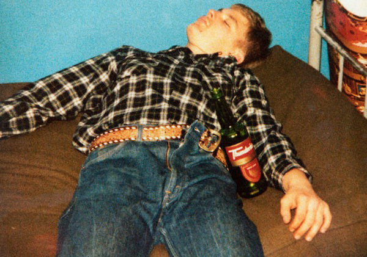

213 - Slayer

Après avoir enchaîné deux chansons plutôt déprimantes, j’avais promis d’aborder un texte un peu plus léger cette fois-ci.
D’un autre côté, j’avais bien envie de parler de Slayer.
Du coup, j’ai coupé la poire en deux : aujourd’hui, ce sera une chanson d’amour, mais une chanson d’amour par Slayer.
Sans plus tarder donc, attaquons-nous à 213, chanson tirée de l’album Divine Intervention sorti en 1994. Un sixième album studio dans lequel on retrouve à peu près tout ce qui fait la signature de Slayer : une musique rapide, agressive, des solos endiablés, une batterie bien sollicitée, et Tom Araya qui hurle un flot intarissable de paroles malsaines par-dessus le tout.
Pas franchement mon préféré pour autant, même s’il faut bien reconnaître que, toute kitsch qu’elle soit, la pochette est quand même particulièrement badass. Cela dit, c’est pas le sujet.
Venons-en plutôt aux paroles de 213.
Pour afficher ou masquer les paroles et leur traduction, cliquez ici.
Autant dire que, là, on bouleverse complètement les codes de la chanson d’amour. C’est sous un angle monstrueusement perverti que le sujet est abordé dans 213.
Et, tiens, d’ailleurs, pourquoi avoir choisi ce titre ?
Le cannibale de Milwaukee
Le nombre 213 fait référence à Jeffrey Dahmer, un des tueurs en série les plus prolifiques de l’histoire des Etats-Unis. 213 étant non pas son nombre de victimes – il n'était pas prolifique à ce point non plus – mais le numéro de l’appartement qu’il occupait à Milwaukee (Wisconsin), et dans lequel il a commis la plupart de ses meurtres.
Le livre de Lionel Dahmer, paru en 1994
Né en 1960 à West Alice (Wisconsin), Jeffrey Dahmer est le fils de Joyce Annette et de Lionel Dahmer. Ce dernier en viendra par la suite à se poser quelques questions quant à l’éducation qu'il a prodiguée à son fils, et tentera d’y répondre au travers d’un livre intitulé A father’s story.
La mère de Jeffrey, instable et psychologiquement fragile, est placée sous anxiolytiques et passe toujours plus de temps alitée. Son mari tâche d’être aussi présent à son chevet que possible mais, du même coup, il néglige quelque peu son fils. Jeffrey est décrit par ses professeurs comme un enfant peu communicatif, réservé et timide.
La fascination du garçon pour les animaux commence tôt. Enfant, il ramène chez lui des libellules ou des papillons morts, qu’il place dans des bocaux. Mais le vrai déclic aura lieu plus tard, après la dissection en classe d’un cochon d’Inde dont il décide de conserver le squelette. Jeffrey se mettra à récupérer des dépouilles d’animaux au bord de la route pour les ouvrir, les démembrer, en garder certaines parties dans des bocaux, curieux de comprendre comment ces bêtes sont faites à l’intérieur.
Son père, heureux de le voir s’intéresser à quelque chose, lui apprendra comment nettoyer à la javel puis conserver des ossements. Un savoir-faire que Jeffrey mettra régulièrement à profit par la suite.
Jeffrey Dahmer posant à côté d'un bong de neige. Parce que.
Au collège, Jeffrey est un élève assez médiocre, connu pour ses farces d'un goût souvent douteux. Il amuse la galerie en classe mais reste plutôt solitaire en dehors. Les autres élèves n'ont pas envie de se lier à un garçon aussi bizarre. Et puis il y a ses problèmes d'alcool, aussi...
Jeffrey a pris l'habitude d'en ramener en douce dans son établissement, et boit assez ouvertement devant ses camarades. Lorsqu'un jour, l'un d'eux le voit avec un verre de gin en classe et lui demande ce qu'il lui prend, Jeffrey répond « C'est mon médicament ».
Une réponse un peu sèche, mais sans doute y avait-il de l'honnêteté là-dedans.
Adolescent, Jeffrey Dahmer se découvre homosexuel. Ne voyant pas comment aborder la question avec ses parents, il décide de garder ça pour lui. D’autant qu’avec la puberté, d’autres pensées plus dérangeantes lui sont venues. Jeffrey est la proie de fantasmes obsédants de domination, de contrôle, de viol…
Tout cela va finir par déborder dans la vie réelle.
À 16 ans, Jeffrey croise régulièrement un joggeur plutôt séduisant, et décide un jour de l’attendre sur son parcours, de l’assommer à son passage puis de violer son corps inconscient. Il reste un moment tapi dans un fourré, une batte de baseball à la main mais, après une longue attente, il apparaît que le joggeur ne viendra pas. Jeffrey ne fera pas d’autre tentative mais ce jour-là, il a probablement franchi un cap.
Lorsque ses parents divorcent après des années de disputes, il a 18 ans. Sa mère étant retournée dans sa famille et son père louant une chambre dans un motel des environs, il a la maison pour lui seul pour quelques temps. C’est pendant cette période que tout bascule vraiment.
Un jour qu’il rentre chez lui en voiture, Jeffrey aperçoit un homme qui se tient sur le bord de la route, le pouce levé. Il hésite à s’arrêter. Depuis des années, il a ce fantasme récurrent dans lequel il prend un auto-stoppeur, le ramène chez lui, et le retient prisonnier, usant de lui comme bon lui semble mais, maintenant qu’une opportunité si parfaite semble se présenter, il se demande si ce n’est pas une mauvaise idée de le concrétiser.
« J’aimerais avoir simplement continué ma route, mais je ne l’ai pas fait. », déclarera Jeffrey Dahmer des années plus tard.
L’auto-stoppeur s’appelle Steven Hicks. Il a l’âge de Jeffrey et revient d’un concert de rock. Le contact passe bien entre eux, et quand Jeffrey propose à Steven de passer chez lui boire un coup ou deux avant de le ramener, il accepte volontiers.
Ils passent les heures qui suivent chez Jeffrey, à discuter autour d’une bière en écoutant de la musique. Tout se passe pour le mieux jusqu’à ce que Steven annonce qu’il se fait tard et qu’il doit y aller, maintenant. Jeffrey ne veut pas. Steven insiste. Jeffrey se saisit d’un haltère et s’en sert pour assommer Steven avant de l’étrangler, puis de se masturber devant son corps sans vie.
Réalisant bien qu’il aura du mal à justifier la présence d’un cadavre dans le salon lorsque son père ou sa mère rentreront à la maison, Jeffrey Dahmer remet à profit un savoir-faire dont il n’avait jusqu’alors usé que sur des carcasses d’animaux. Séparant la chair des os avec de l’acide, il réduit le squelette en petits morceaux avant d’aller les semer aux quatre coins de la propriété familiale.
Steven serait toujours à ses côtés, maintenant, éparpillé autour de la maison qu’il avait voulu quitter.
Par la suite, Jeffrey Dahmer se lance dans des études de commerce mais décroche rapidement, en bonne partie à cause de ses problèmes d’alcool. Son père le pousse alors à s’enrôler dans l’armée, où il commencer à servir comme aide-soignant en 1979. Jeffrey apprécie cette discipline, et il sent que la structure de l’armée lui convient bien, que ses pulsions l’y tourmentent moins.
Mais son alcoolisme le poursuit toujours. Deux ans plus tard, il est jugé inapte et libéré de ses obligations.
LaCage, un des clubs gays de Milwaukee où Jeffrey Dahmer avait l'habitude de repérer ses victimes
Désemparé, Lionel Dahmer envoie Jeffrey vivre chez sa grand-mère, espérant que ce changement de cadre lui soit bénéfique. C’est le cas au début. Jeffrey a toujours aimé sa grand-mère, et entame une cohabitation harmonieuse. Il se ressaisit, et parvient à trouver un emploi dans un centre médical de Milwaukee.
L’embellie ne dure pas, cependant. Durant les années passées chez sa grand-mère, Jeffrey continue de boire, il est arrêté deux fois pour exhibitionnisme, il vole un mannequin masculin dans une boutique de vêtements (que sa grand-mère l’oblige à jeter quand elle le trouve dans un placard), et il tente de déterrer un corps fraîchement enterré pour le ramener à la maison avant de se raviser, la terre étant trop dure.
Et puis surtout, il se met à fréquenter des clubs gays. Réalisant à quel point il a du mal à avoir des rapports sexuels avec des partenaires conscients, il prend l’habitude de les droguer à leur insu, en mettant des somnifères dans leur verre, avant de les violer.
Forcément, ça finit par mal tourner.
Un matin de novembre 1987, Jeffrey Dahmer se réveille ainsi dans à l’Ambassador Hotel de Milwaukee. Il ouvre les yeux sur un cadavre couvert d’ecchymoses, allongé à ses côtés, et réalise que ses poings et ses bras sont également contusionnés. Il se rappelle être arrivé à l’hotêl avec cet homme, et l’avoir drogué, mais ne garde aucun souvenir de ce qui s’est passé ensuite.
Jeffrey parvient à faire sortir le corps en le fourrant dans une valise, et le ramène dans la maison de sa grand-mère. Il le conserve une semaine avant de le découper, et de jeter les morceaux aux ordures, à l’exception du crâne qu’il nettoie à la javel et conserve.
Plutôt que de lui servir d’avertissement, l’épisode semble avoir réveillé quelque chose de terrifiant chez Jeffrey.
Il commence à ramener des hommes chez sa grand-mère tard dans la nuit. Là, il les drogue et les étrangle avant de se débarrasser des corps. Il prend l’habitude de conserver des morceaux de ses victimes, et va jusqu’à ramener sur son lieu de travail une tête et des parties génitales conservées dans de l’acétone, qu’il cache dans son casier.
Excédée par le comportement de Jeffrey et par l’odeur atroce qui règne dans la maison, sa grand-mère lui demande finalement de partir. Sans qu’elle se doute de quoi que ce soit, son petit-fils avait déjà tué trois hommes sous son toit.
À l'intérieur de l'appartement 213
En mai 1990, Jeffrey Dahmer emménage dans le tristement célèbre appartement 213, 924 North 25th Street, à Milwaukee. Là-bas, il continue ses activités macabres, attirant des inconnus chez lui, généralement en leur proposant de poser pour des photographies dénudées contre 50$. Il continue d’agrandir sa collection de trophées macabres, prend des photos des corps de ses victimes, et se livre occasionnellement à des actes de cannibalisme.
Souvent, Jeffrey sera passé à deux doigts de voir son secret découvert.
Il y a eu cette fois où son père lui a rendu visite et, remarquant une boîte cadenassée dans laquelle Jeffrey gardait les restes d’une de ses victimes, a insisté pour savoir ce qu’elle contenait. Devant le silence de son fils, Lionel Dahmer s’était énervé et avait décidé de la forcer. Paniqué, Jeffrey était parvenu à s’en sortir en prétendant que la boîte contenait de la littérature pornographique.
Une autre fois, chez sa grand-mère, il avait été surpris par celle-ci en compagnie d’un autre homme. Avant qu’il l’ait tué, heureusement, mais ce dernier ayant déjà ingéré le somnifère dissous dans son verre, Jeffrey avait dû l’amener à l’hôpital. Le tuer était devenu trop risqué.
Il y a encore cette fois dans l’appartement 213, où il avait bu le verre drogué destiné à sa victime. L’homme avait filé avec la montre de Jeffrey et 300$. Si l’envie lui avait prise de fouiller un peu davantage, il aurait trouvé des choses bien plus surprenantes.
Bien sûr, il y avait aussi les bruits liés à ses activités macabres, et surtout les odeurs. Les voisins s’en sont plaints à plusieurs reprises mais Jeffrey s’en était sorti à chaque fois, prétextant un congélateur plein tombé en panne ou bien une hécatombe chez ses poissons exotiques.
Mais là où il est passé le plus près de l’arrestation, c’est lorsqu’une de ses victimes a réussi à s’échapper. Celle-là, il ne l’avait pas étranglée. Il s’agissait d’un enfant de 13 ans, d’origine laotienne. Celui-ci s'était retrouvé ainsi à errer dans la rue, nu, le derrière en sang et encore sous le coup des somnifères qu’il avait ingérés. Jeffrey, qui était sorti acheter de la bière, l'avait retrouvé en compagnie de deux jeunes filles qui lui posaient des questions. Tentant de s’en sortir au culot, il avait prétendu que le garçon était son petit ami avec qui il venait de se disputer et l’avait agrippé par le bras pour l’emmener mais elles l'avaient retenu, prévenant Jeffrey qu’elles avaient averti la police.
Effectivement, deux policiers étaient bientôt arrivés. Ils avaient refusé d’écouter les deux jeunes filles et décidé d’accompagner Jeffrey et son « petit ami » jusqu’à l’appartement. Là, le garçon, qui ne parlait pas bien anglais et était encore trop faible pour pouvoir aligner une phrase cohérente avait regardé impuissant Jeffrey baratiner les deux policiers. Le garçon était bien son petit ami, avait-il prétendu, il faisait plus jeune mais en réalité il avait 19 ans. Ils avaient eu une scène de ménage, tout simplement. A l’appui, il leur avait montré des photos dénudées pour lesquelles le laotien avait posé.
Les policiers n'avaient pas cherché plus loin et s'étaient laissés convaincre par Jeffrey. Intrigué par l’odeur désagréable qui régnait dans l’appartement, l’un d’eux avait tout de même jeté un coup d’œil dans la chambre avant de repartir, sans rien remarquer de particulier. Aurait-il regardé d’un peu plus près, il aurait pu y distinguer le corps en décomposition de la victime précédente.
Le jeune laotien n'avait pas tardé à subir le même sort. À peine la porte s’était-elle refermée que Jeffrey Dahmer l’étranglait, furieux de ce qui venait de se passer.
Finalement, il faudra qu’un autre s’échappe pour que le cauchemar prenne fin.
En juillet 1991, un jeune homme interpelle deux officiers de police de Milwaukee, affirmant qu’un malade l’a invité chez lui pour une séance photo avant de lui mettre des menottes et de le menacer avec un couteau. Effectivement, il a des menottes accrochées à un poignet, et les deux agents n’arrivent pas à les lui enlever.
L’homme les guide donc jusqu’à l’appartement 213, où Jeffrey Dahmer les accueille et reconnaît les faits, sans toutefois chercher à fournir le moindre semblant d’explication. En cherchant les clés des menottes, un des policiers découvre des photographies macabres sur la table de chevet et reconnaît avec horreur le décor : elles ont été prises dans l’appartement où il se tient.
Jeffrey Dahmer est arrêté, et son appartement fouillé.

Jeffrey Dahmer photographié après son arrestation
« La meilleure façon dont je peux décrire ça, c’est qu’on était en train de démanteler le musée de quelqu’un.», dira à ce sujet un des médecins légistes impliqués dans l’affaire.
Au 213, on découvre des crânes, certains peints, des têtes tranchées, cinq squelettes, des mains, des restes humains en train de se dissoudre dans un bidon d’acide, d’autres photographies sordides, des organes divers, certains desséchés, d’autres conservés au frigo pour plus tard…
Plus glaçant, on remarque des trous percés dans certains des crânes, et des traces d’inflammation indiquant qu’ils ont été pratiqués sur des hommes encore vivantes. Jeffrey racontera avoir mené sur eux une expérience des plus étranges. Il avait l’espoir qu’en injectant de l’acide ou de l’eau bouillante dans leur crâne, il parviendrait à les "zombifier", faisant d’eux des esclaves sexuels, dociles et dépourvus de volonté. Les résultats furent décevants.
Celui que la presse appelle désormais le cannibale de Milwaukee avoue tout et plaide coupable à son procès. Sa culpabilité est établie pour 16 des 17 meurtres qu'il revendique et il est condamné à purger 957 années en prison.
Sans doute une peine encore trop douce, pour lui qui a déclaré à plusieurs reprises mériter la mort pour ce qu'il avait fait.
Une chanson Dahmer
Les paroles de 213 ont été écrites par Tom Araya, chanteur et bassiste historique de Slayer, dont la passion persistante pour les tueurs en série a alimenté quelques morceaux mémorables du groupe. Je pense notamment à Beauty through order (dédié à la sulfureuse comtesse Bathory), Dead skin mask (qui parle d’Ed Gein, le tueur qui a inspiré Psychose, Massacre à la tronçonneuse, Le Silence des agneaux entre autres), ou encore Gemini (une chanson sur le tueur du Zodiaque).
A chaque fois, Tom Araya choisit d’évoquer les tueurs en série à la première personne, mais rarement il aura su nous mettre dans leur peau de façon aussi convaincante qu’avec 213.
Tout dans les paroles de cette chanson dénote un intérêt sincère pour Jeffrey Dahmer, et une volonté de faire comprendre ce qui l’a poussé à commettre de telles atrocités. Plutôt que de tout miser sur l’image choc du cannibale de Milwaukee et de le décrire violant, éviscérant, démembrant les corps sans vie de ses victimes, Tom Araya a trouvé une approche plus perturbante encore : nous faire rentrer dans la tête de Jeffrey Dahmer.
En m’attardant sur les paroles de 213, ce qui m’a d’emblée frappé, c’est l’ambiguïté étudiée de certains passages.
Ainsi, « Instinct primitif, une passion pour la chair » revêt à la fois une connotation sexuelle et cannibale dans ce contexte. De même, « Ta froide tendresse » peut tout aussi bien se référer au caractère affectueux de l’amant qu’à la qualité de sa chair.
Et quel cynisme dans cette description de l’étranglement (« Je ne peux pas oublier ta respiration / Haletant avec excitation, mes mains autour de ton cou »), où le geste meurtrier est évoqué presque comme un acte tendre, et les tentatives désespérées de la victime pour inspirer un peu d’air comme l’effet de l’excitation.
On pourrait aussi citer ce passage dont la traduction est impuissante à rendre toute l’ambivalence : « A dead body lying next to mine ». Lying pouvant aussi bien vouloir dire allongé ou gisant selon le contexte.
Mais l’idée sous-jacente est déjà claire à présent. Sexe, meurtre, cannibalisme, amour… Tout cela se confond dans l’esprit de Jeffrey Dahmer, et les atrocités qu’il a commises ne sont finalement que l’expression de sa passion amoureuse.
Un message affirmé haut et fort à la toute fin de la chanson :
Comme j’aime
Comme j’aime te tuer
Amour et mort, intimement liés.
Cependant, Jeffrey Dahmer n’était pas pour autant nécrophile au premier degré, ainsi qu’on l’a reconnu lors de son procès. Bien qu’il ait eu des rapports sexuels avec les corps de ses victimes, il n’était pas spécifiquement attiré par les cadavres. Il aurait plutôt préféré des partenaires vivants, mais totalement soumis. En attestent ses vaines tentatives de créer des esclaves sexuels dépourvus de volonté propre.
Mais cet aspect de la psychologie du meurtrier n’a pas échappé à Tom Araya et, dès les premières lignes, il évoque ce fantasme de domination complète qui pousse Jeffrey à tuer : Contrôle complet d’un bien précieux / Toucher et caresser sans objection
Un thème qui revient par la suite dans la chanson, où l'amant est régulièrement évoqué comme un objet, conformément à la vision qu'en avait acquis Jeffrey Dahmer : C'est un processus, ça n'arrive pas simplement dans la nuit, de dépersonnaliser une personne et la voir juste comme un objet. Un objet pour le plaisir et pas un être humain, vivant, respirant. Il semblerait que ça rende plus facile la réalisation de choses qu'on ne devrait pas faire.
Mais la chanson s'attarde aussi sur d'autres facettes du tueur. Ainsi, 213 évoque l’aspect sensuel que revêt la dissection pour Jeffrey Dahmer (L’excitation de la dissection est douce). Une fascination qui a commencé très jeune mais dont il admet ne pas connaître l’origine exacte.
La chanson insiste aussi sur la solitude de cet homme (« J’ai besoin d’un ami / S’il te plaît sois mon compagnon / Je ne veux pas être / Laissé seul avec ma raison »), pour qui tuer était aussi un moyen de retenir à ses côtés ceux qu’il aimait.
Peut-être parce qu’il avait trop été délaissé quand il était enfant.
L’importance pour lui de garder la mémoire de ses victimes tient également une grande place dans la chanson, avec notamment ce passage qui revient deux fois : Les souvenirs gardent l’amour en vie / Les souvenirs ne mourront jamais . C’est une facette cruciale de la personnalité de Jeffrey Dahmer, qui explique son besoin de conserver des morceaux de ses amants, mais aussi ses actes de cannibalisme, qu’il décrit comme une façon de faire d’eux une part permanente de moi .
Jeffrey Dahmer endormi, une bière à côté de lui
Enfin, et là je m’attends à ce qu’on m’accuse de surinterpréter, je crois voir dans le dernier couplet une référence discrète au rôle de l’alcool dans les meurtres commis par Jeffrey Dahmer.
Un rôle crucial, car visiblement, il avait besoin de se mettre dans un état d’ébriété lorsque l’envie lui prenait de tuer, pour se désinhiber et accomplir ce qui, sobre, n’était sans doute qu’un fantasme inaccessible.
Lors de l’interrogatoire qui a suivi son arrestation, Jeffrey Dahmer, encore un peu ivre, semblait avoir du mal à réaliser ce qui s’est passé, et ramenait souvent la conversation à ses problèmes d’alcool. J’étais saoul. J’ai perdu le contrôle. Autrement, je ne serais pas là, affirmait-t-il à l’officier qui le questionnait.
Je crois que c’est cette même « redescente », et cette même réalisation terrible de ce qu’il vient d’accomplir qu’on retrouve à la fin de 213 (Ce que j’ai fait / Ce que je suis devenu). Une prise de conscience contrebalancée cependant par les deux dernières lignes (Comme j’aime / Comme j’aime te tuer) : Jeffrey Dahmer est conscient de ce qu’il a fait, du monstre qu’il est devenu, mais ses pulsions sont plus fortes. Il sait que l’envie lui reprendra, et alors il boira à nouveau, et il recommencera.
Une fausse note
Au final, tous ces bouts de phrases désordonnés qui composent le texte sont bien réfléchis et, étudiés à la lumière du fait divers qui a inspiré 213, ils se rejoignent pour former un portrait très exhaustif de Jeffrey Dahmer et de ses motivations.
Il y a toutefois une ombre à ce tableau si glaçant de réalisme.
Ça tient à peu de choses, vraiment, juste un mot : sadique (Actes sadiques, un amour si authentique).
Jeffrey Dahmer ne trouve pas de plaisir à faire souffrir, il n’aurait pas pris la peine de faire ingérer des somnifères à ses victimes avant de les tuer si ç’avait été le cas.
Contrairement à d’autres tueurs en série, il n’éprouve pas non plus de satisfaction à tuer. Le meurtre était un moyen d’arriver à une fin, c’était la partie la moins satisfaisante. Je n’aimais pas faire ça, a-t-il notamment déclaré en interview (ce qui remet un peu en cause la dernière ligne de la chanson aussi, d'ailleurs).
L’adjectif « sadique » semble donc particulièrement impropre à décrire les actes Jeffrey Dahmer, et c’est un choix d’autant plus frustrant que Tom Araya le sait forcément. Le reste de la chanson trahit trop d’intérêt et de recherches sur le tueur pour qu’il ait pu ignorer que Jeffrey Dahmer ne recherchait pas la souffrance de ses victimes, et je le soupçonne de n’avoir employé le mot que parce qu’il trouvait que ça sonnait bien.
Cela dit, 213 reste tout de même un portrait saisissant, et admirable dans sa façon de nous plonger dans la tête de Jeffrey Dahmer, de nous confronter au flot de pensées, de pulsions, de sensations qui s’y bousculent.
En tout cas, c'est mon point de vue, qui n’est jamais que celui d’un internaute moyen, aussi voyeur qu’un autre, qui avait déjà vu évoquer le cas Jeffrey Dahmer à quelques reprises, et qui a poussé un peu plus loin sa curiosité morbide pour les besoins du présent billet.1
L’avis le plus pertinent sur cette chanson, ce serait celui du principal intéressé. Que pense Jeffrey Dahmer de 213 ?
Le morceau n’a vraisemblablement pas eu le temps d’arriver jusqu’à ses oreilles. Le 28 novembre 1994 – tout juste deux mois après la sortie de l’album Divine Intervention – Jeffrey Dahmer était battu à mort par Christopher Scarver, un codétenu persuadé d’être le messie.
Jeffrey a succombé sans pousser un cri, rapporte-t-on.
La peine que lui-même affirmait mériter lui était finalement accordée. De mains guidées par la justice divine, ou par la démence.
1 Un billet que j’ai pas mal préparé sur Youtube, pour être honnête, notamment avec cette interview de Jeffrey Dahmer, ces extraits de son procès, et ce documentaire à la chronologie un peu décousue mais qui présente des témoignages intéressants. Je me suis aussi appuyé sur un petit livre probablement périmé, Le monstre de Milwaukee, de Don Davis.